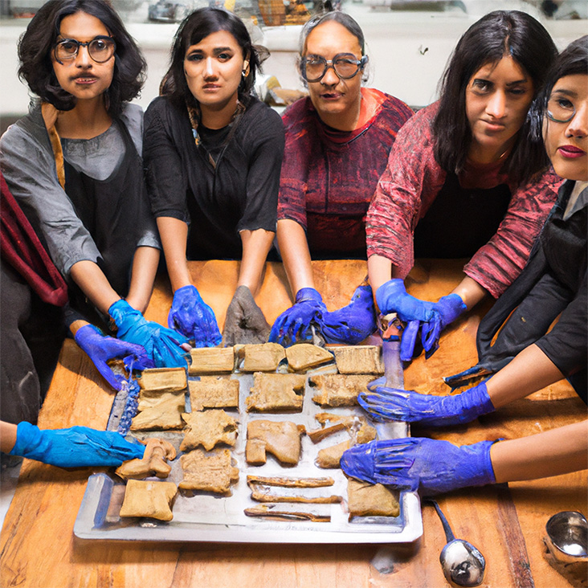
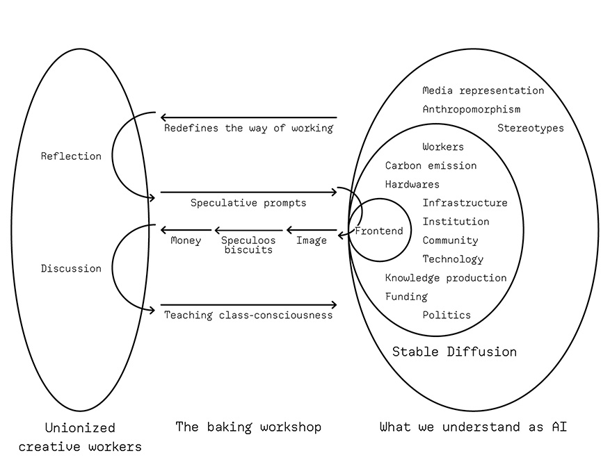
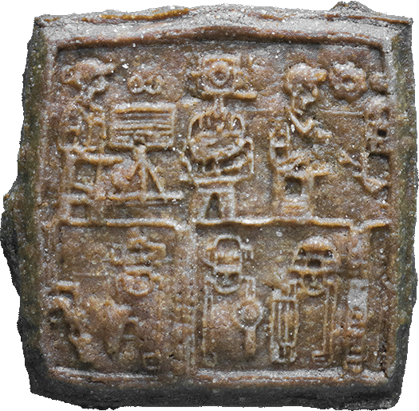
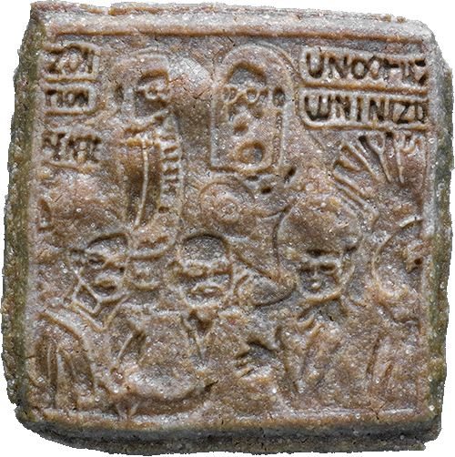
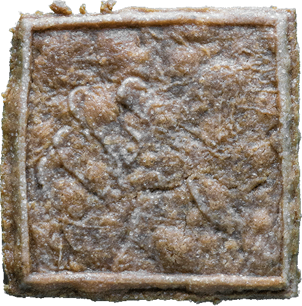
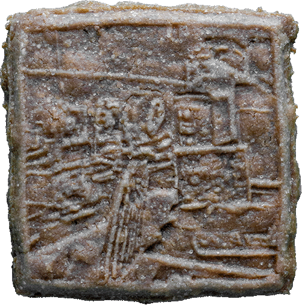
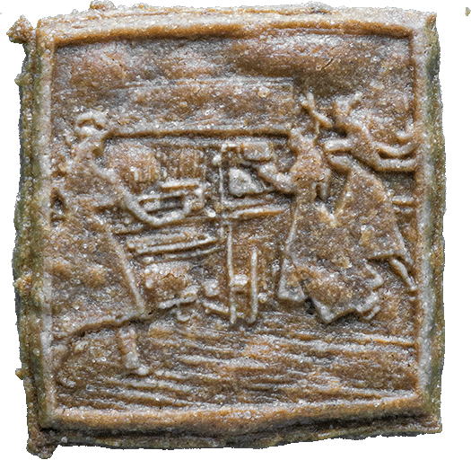
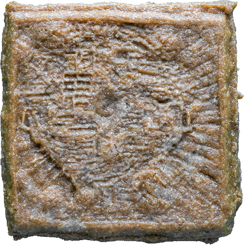
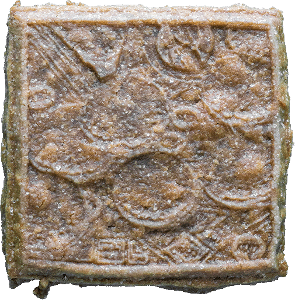

Unionizing the Speculative
Speculative fundraising towards generative AI - creative worker unionization

Speculoos biscuits containing AI-generated images
How can creative workers unionize with generative AI? How can we as creative workers be accountable to AI-led automation? How did linotype and personal computers cause the demise of the International Typographical Union (ITU) which used to be one of the most influential unions in the US? What is the role and limitation of speculation as a strategy in this?
The project “Unionizing the speculative: Speculative fundraising towards generative AI - creative worker unionization“ is an urgent response to these urgent questions. Using image generating AI Stable Diffusion, a group of precarious creative workers generated images that will be engraved on Speculoos cookies whose name shares its origin with the word speculate.
The cookies serve as the symbol and currency of the speculative fundraising to teach AI labor ethics. The project facilitates a collective speculation on how this fund could be used in the strategies of campaign to manifest the voices of creative workers about the influence of generative AI to their labor conditions.

Exhibition at Kampnagel, Hamburg
As generative AI tools become more accessible to designers, the rhetoric of "artistic collaboration with AI" has been circulating more than ever in the cultural sector. However, this is misleading in two ways, about AI and about collaboration. First of all, the expression anthropomorphizes AI, giving the impression that it is a singular entity with a human-like mind. AI is, in fact, closer to an ecosystem consisting of workers, infrastructure, institutions, funding, and many other constituents. Furthermore, the claim of collaboration without mutuality is not fundamentally different from instrumentalization. To be able to call a designer-AI relationship a collaboration, it requires more than mere service subscription but facilitation, expectation management, negotiation, solidarity, and care.
This criticism raises a question: “What would it then mean to collaborate with AI”? Considering the historical relationship between technology of automation and creative labor (to be discussed in the case studies), the idea of collaboration merely as working together has usually concluded in one side (mainly workers) becoming precarious. In order to prevent the collaboration turning into a cycle of exploitation, it is crucial for the creative workers and generative AI to unionize – the action of joining together in a political context.1 The project proposes one of the strategies of unionization as an urgent response to the devaluation of design labor due to automation led by generative AI.
Speculation is an important method in this project. In principle, unionization starts as a speculative work “to identify how the interests of different people and different species conflict – as well as to highlight the areas of the Venn diagram where they do overlap.”2 Fictions bridge gaps between different experiences of marginalization and can meaningfully facilitate unionization. However, it is the strategy of colonial capitalism to further this cognitive gap, atomizing workers to prevent chances of political encounters, obscuring who they have to unionize with. Unionization of Uber drivers, delivery workers, or self-employed designers therefore tends to be more speculative than that of employed workers.
Unionizing with AI is the extrapolated form of unionization with the unknown. At least within the scope of this project, I’m not an AI expert and I have no access to knowledge to thoroughly understand how the state of the art AI works and what it’s going to be capable of in the near future. Also I have no resource yet to make the underpaid labeling workers in the global south working for OpenAI directly involved in this project. Unionization in this sense, is inevitably speculative.3 The project questions if speculation can be an accountable unionizing gesture in a non-optimistic way.
Starting from the following parts, the article will introduce a few historical moments (fun facts) that resonate with the issue of automatization, financialization, unionization and speculation that the project concerns. Those case studies will inform the recipe for a public workshop and a (speculative) fundraising program which the article will conclude with.
Fun Fact 1
The International Typographical Union used to be one of the most influential unions in the US.

Linotype Machine
Apple Macintosh personal computer
The project is situated in the historical relationship between design labor (or its predecessors) and technological development starting from Gutenberg’s printing press. The International Typographical Union (ITU) which used to be one of the most influential unions in the US lost a significant part of its bargaining power due to technological means of automatization such as linotype and personal computers and dissolved in 1986. The popularization of personal computers which took place around the same period have fundamentally reshaped how designers work as “the tasks that were once contracted out with some combination of strict direction and trust were not fully under the control of the individual designer.”4

“5 Ways to Power Up Your Creative Workflows with Generative AI Join creative industry analyst Andreas Pfeiffer as he shares the quantifiable creative productivity improvements delivered when using generative Al in creative workflows…” An excerpt from Adobe’s LinkedIn post
The influence of the increased availability of generative AI such as ChatGPT and Stable Diffusion on creative workers’ precarity is an ongoing issue. Yet Adobe promises the improvement of “quantifiable creative productivity improvements” through the use of their generative AI features, the technological tool that is not owned by the workers can make productive labor so available thus cheaper. It remains questionable if such technologically enhanced productivity will contribute to the livelihood of its working class users, or deplete their agency further like how linotype and personal computers did. How can unionization challenge this historical loop of automation and devaluation of labor without further antagonizing the creative workers in their relationship with technology?
Fun Fact 2
Speculation is what creative workers and AI have in common.
The project highlights that the works of both AI and creative workers are highly relevant to the issue of speculation. This mutual experience of speculation has a considerable potential for becoming a shared ground and methodology of unionization.
AI is a speculating machine that “exceeds the rules-based decision procedures and extends to the affective pull of intuitions for data.”5 Generative AI speculates what the next word and the next pixel would be intuitively, “making spontaneous judgements that are not the result of conscious trains of reasoning.”6 The infrastructure of financial speculation has already been driven by AI, the entanglement of “super-fast computer algorithms, telecommunications, and derivatives” that “goes faster than the human conception of time” actively taking risk for the chance of profit.7

Speculative Everything featured on Amazon
Similarly, every project-based work of design starting from a proposal is, in essence, speculative. Designers educated to be entrepreneurial and to take risks are, in practice, “the ultimate precariat”, “the free floating agents”, and oftentimes overworked and underpaid gig-base workers.8 One instance of design methodology where this tendency is particularly present is speculative design. The term, popularized by Anthony Dunne and Fiona Raby in their book “Speculative Everything: Design, Fiction and Social Dreaming”, refers to a design practice “where futuristic and alternative scenarios convey ideas.”9 While the intention of the duo is closer to a more figurative definition of the word speculate (as that of generative AI), the popularization of the term can also be seen as a symptom of neoliberal financialization (as that of investing AI). The motivation behind the prevalence of speculative design methodology in design education could be linked to how designers embodied a speculative economic attitude and cruel optimism.10 In the advertising of design education in the Global North, design is promoted as the agent of social change, yet a notable social change requires a lot more patience, resource, and social complexities which goes beyond what such courses can accommodate. Adopting the approach of speculative design turns design education into a much more attractive commodity by detaching design from accountability, emphasizing only the “fun parts” where designers can have full agency of creativity in their speculation. In this case, speculation doesn’t only happen within the practice of design, but also in the life of (oftentimes international) students targeted by the marketing, who speculate about their own future of becoming like the star designers that the school presents and take the risk of becoming an art student.
The speculations of AI and creative workers meet and entangle, sometimes defining the economic and cultural foundation of its practitioners and others. For example, the speculative work culture of creative workers informs, and are spontaneously influenced by the development of AI-powered tools, from Office 365 to Photoshop. The speculation of AI also impacts the livelihood of creative workers not only by reforming the design industry like how the other technologies did but more fundamentally by giving a rise to “algorithmic culture” concerning “the enfolding of human thought, conduct, organization and expression into the logic of big data and large-scale computation.”11 As the first step of unionization, it is crucial to identify how the gesture of unionization from workers could reach the apparatus of AI through the entanglement of speculation considering that AI is a dispersed ecosystem rather than an anthropomorphized body. How can workers' speculations influence AI to transform itself from a competitor into a companion of unionization?
Fun Fact 3
The history of speculation is congealed in a biscuit.

Speculoos Mold from the 19th century

Speculoos bakers from 1946
Speculoos (also referred to as Speculaas in the Netherlands) is a type of traditional spice biscuit in the Netherlands and Belgium, The cookie is the mirror image of the wooden mold in which it's been made. The name speculoos, therefore, derives from the Latin word speculum, meaning mirror, from which the word speculate also originates. In fact, the history of speculoos is entangled with that of speculoos. The spices for speculoos (Speculaaskruiden) became commonly available in the 17th century distributed by the Dutch East India Company, the first company to sell shares of a business to the public in 1602. Therefore, the Dutch variant of the biscuit (Speculaas) could contain more spices and have stronger flavor than the Belgian equivalent of it (Speculoos) as the spices were more available in the Netherlands.
The project critically appropriates the violent history of speculation congealed in Speculoos biscuit as a symbol of unionization between creative workers and AI through speculation. The image-containing capacity of the biscuit is utilized as a media through which the voices of creative workers and their gesture of unionization toward AI will be manifested. Speculoos as edible goods are commodified in the process of fundraising like the Wedgwood anti-slavery medallion.12 Speculoos as the product of (usually) collective labor of kneading, molding and baking provide an opportunity of gathering for creative workers and facilitate the process of discussion and decision making about how the fund could be strategically used.
Recipe

Unionizing Workshop at Sandberg Institute, Amsterdam
Collective process of baking
The recipe for Fundraising with AI-generated, creative-worker-baked Speculoos biscuits.
Summing up the fun facts listed above, the recipe of creative-worker-AI unionization emerges. The development and demonstration of this recipe was generously co-hosted with Hackers & Designer and Platform BK.
- Gather a group of unionized creative workers, whose working conditions have been influenced by AI.
- Choose a specific instance of AI to unionize with. In the case of this recipe, it will be Stable Diffusion, an image generating AI developed by Runway, CompVis, and Stability AI, as its ecosystem seemed relatively small and independent to map and intervene compared to other AI systems.
- Together with the creative workers, utilize Stable Diffusion to translate the workers’ speculation on the influence of AI on their labor rights into images that will be imprinted on speculoos biscuits. Supported by the image generating AI’s speculation “with greater intuitive flexibility and generalizability that do not seek to human sensory, cognitive or perceptual functions”, they will be able to elaborate on “visual information that humans cannot even receive or perceive.”13
- Translate the generated images into 3D printed Speculoos molds.14
- Perform the collective labor of transforming the images into edible biscuits, by kneading, molding and baking together.
- Spontaneously, facilitate a discussion about how the profits from selling the cookies could be utilized in the process of unionization with AI, or more specifically, Stable Diffusion, in various strategies such as lobbying and campaigns.
- Set the crowdfunding goal. In this project, the goal is symbolically set as 1.01 million dollars, which is 1% of 101 million that Stable Diffusion raised.15
- Choose a crowdfunding platform, such as GoFundMe and Kickstarter, to financialize the political urgency through speculation. For this project, KoFi will be used for it being a platform used by many precarious cultural workers such as meme creators.
- Conduct unpaid labor to make your political urgency facilitate the speculation of donors.
- Use the fund in the way that was discussed.
For Sale
Buy the AI-generated Speculoos Cookies
The following twelve speculoos biscuits were created based on the corresponding prompts. The biscuits are available for sale on the crowdfunding platform KoFi.
- 
Speculating (Creative Workers and Generative AI Unionization)
-
Speculating (Recognition of AI Companions Beyond Anthropomorphism)
- 
Speculating (a Mutual Relationship Between AI and Creative Workers Maintained Through Facilitation, Mediation, Negotiation, Solidarity, and Care)
- 
Speculating (Speculation as an Accountable Gesture of Unionization)
- 
Speculating (Generative AI with Labor Ethics)
-
Speculating (Decoupling Creative Labor from Algorithmic Culture)
-
Speculating (Collaboration Between AI and Creative Workers That Doesn't Exploit Either Side)
-
Speculating (Generative AI for Reduced Precarity, Not Increased Productivity)
- 
Speculating (The History Where the Technologies of Automation – Linotype, Personal Computers, and Generative AI – Didn't Dissolve the International Typographical Union)
- 
Speculating (Unionized Creative Workers' Movement Impacting the Critical Point of the Complex Apparatus of Generative AI)
-
Speculating (Speculation Deviating from the Exploitative History of Speculation Congealed in Speculoos Biscuits)
- 
Speculating (Raising $1.01 Million Fund – 1% of What Stable Diffusion Received – by Selling AI-Generated Speculoos Biscuits)
Exhibitions
The biscuits were exhibited at Kampnagel, Hamburg and re:publica 2024, Berlin


Footnotes
1 Oxford English Dictionary, s.v. "union."
2 Elvia Wilk, Death by Landscape (New York: Soft Skull Press, 2022).
3 Time, "Kenyan Workers Behind OpenAI's ChatGPT," accessed January 12, 2024, https://time.com/6247678/openai-chatgpt-kenya-workers/#.
4 OtherForms, "Typography, Automation, and the Division of Labor," accessed January 12, 2024, https://otherforms.net/typography-automation-and-the-division-of-labor/.
5 Louise Amoore, Cloud Ethics: Algorithms and the Attributes of Ourselves and Others.
6 Ibid.
7 Parole, "Form Follows Finance: Financial and Speculative Design in the Age of Machines," accessed January 12, 2024, https://www.parole.cc/compendiums/form-follows-finance/financial-and-speculative-design-in-the-age-of-machines/.
8 Eye on Design, "If Labor Is Entitled to All It Creates, Where Does That Leave Graphic Design?," accessed January 12, 2024, https://eyeondesign.aiga.org/if-labor-is-entitled-to-all-it-creates-where-does-that-leave-graphic-design/.
9 Anthony Dunne and Fiona Raby, Speculative Everything: Design, Fiction, and Social Dreaming (Cambridge, MA: MIT Press, 2013).
10 Lauren Berlant, Cruel Optimism (Durham, NC: Duke University Press, 2011).
11 Ted Striphas, "Algorithmic Culture," European Journal of Cultural Studies 18.
12 Mary Guyatt, "The Wedgwood Slave Medallion: Values in Eighteenth-Century Design," Journal of Design History 13, no. 2 (2000): 93–105.
13 Carolyn Pedwell, "Speculative Machines and Us: More-Than-Human Intuition and the Algorithmic Condition," in Beyond Human: Deep Learning, Explainability and Representation, ed. Theory, Culture and Society.
14 Make Fast Workshop, "Hacks," accessed January 12, 2024, https://makefastworkshop.com/hacks/?p=20171116.
15 TechCrunch, "Stability AI, the Startup Behind Stable Diffusion, Raises $101M," accessed January 12, 2024, https://techcrunch.com/2022/10/17/stability-ai-the-startup-behind-stable-diffusion-raises-101m/.
Portfolio - Noam Youngrak Son
For a more visual overview, check my Instagram.
| Image | Title | Category | Year | Notes | Funding |
|---|
Noam Youngrak Son is a communication designer, design theorist, and cultural worker. Their design work encompasses small-scale publishing projects, speculative worldbuilding, workshops, lectures, writing, net art, and occasional performative interventions. As a cultural worker, they have co-organized the Ghent-based queer publishing collective Bebe Books since 2021. Son has expanded their focus from design to theory in order to critically engage with the ontology of the design industry, media, and broader material culture. This turn is informed by their observations of cultural assemblages that echo the extractive operations of capitalism on racialized and more-than-human populations. They are particularly attentive to the interconnected notions of speculation—both as an open artistic approach and as a process of value increase in capitalism. They research the tendency of the former in design to be subjugated by the latter and explore alternative methods for speculative design practices to realize their transindividual potential through collective organization and workshop facilitation. In this process, Son utilizes queer publishing as a technology for mobilizing attention beyond the financialized “scarce resource” of the attention economy. In this context, publishing extends beyond mere printed matter to encompass the maintenance of communities and the cultivation of interspecies relationships. The term "queer" here is not used as a statement of identity but as a process—small yet collective strategies of publishing that challenge the modern myth of the heroic designer.
Subscribe to the newsletter